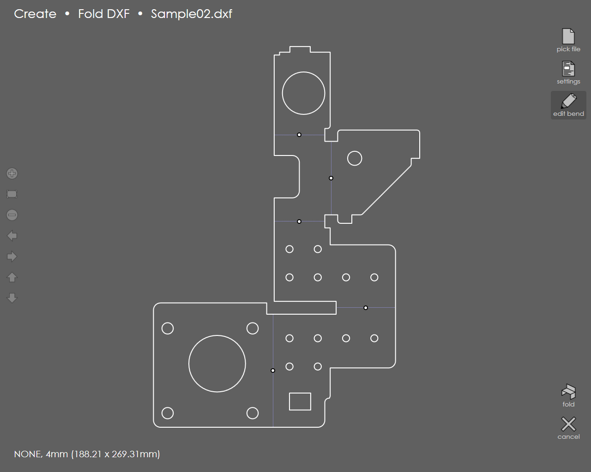
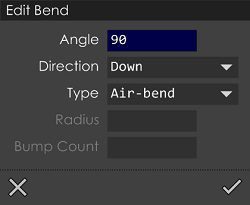
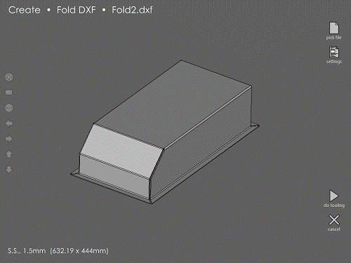

Fold
When this option is selected, a File Selection panel appears using which the required DXF file to be folded can be picked. Once a file is selected, it is opened in the Fold DXF page:

It is possible to set a material, change the thickness or assign a Punch or Die for the DXF file by touching the Settings button on the right which is the same as the Part Settings dialog that appears while editing a profile. The bend lines in this DXF file are identified and displayed with small dots. By default, will consider all of these to be 90-degree, UP bends.
| It is possible to set a material, change the thickness or assign a Punch or Die for the DXF file by touching the Settings button on the right which is the same as the Part Settings dialog that appears while editing a profile. The bend lines in this DXF file are identified and displayed with small dots. By default, will consider all of these to be 90-degree, UP bends. |
To edit bend information attached to a bend line, just touch the dot on that bend line. The below panel appears:

You can set the bend angle, bend direction, type of bend (air-bend, coining, hemming etc) in this panel. In case of Large-Radius bends enter the Radius and Bump Count using the options provided. As the bend information is being edited for these bends, the dots on the bend lines will change to yellow (to indicate that the bend information has been edited). This way, one can quickly see which bends lines have been reviewed and modified.
Fold
Touching the Fold button will fold the DXF using the angles specified and displays a 3-dimensional view. This view can be rotated by touching on the blank area around the model and then dragging the view. Navigation buttons are present to the left side of the window. Use the arrow keys left, right, up and down to move the model along the respective direction. Touch the Plus mark to zoom-in and use the Minus mark to zoom-out the model. To fit the model to the window, touch the rectangle mark, present in between the Plus and Minus icons.

If this looks fine, then press the Do Tooling button to compute a bending sequence and tool assignments for this model. The model is then saved in the Models folder. Review the sequence, gauge positions, and tooling on this model, or run the program for this model on the press-brake. If the model does not look quite correct, you can tap the Cancel button to go back to the previous page, where you can adjust the folding angles and try again. Before folding up the flat pattern, make sure the required parameters are entered in the Settings dialog and the thickness and material used are verified. If you plan to use special tools, select and lock them in the same dialog. In fact, those parameters influence the dimensions of the resulting folded 3D model. After this initial folding, the 3D model always maintains its dimensions even if the tooling is changed using the Edit → Sequence → Recompute.